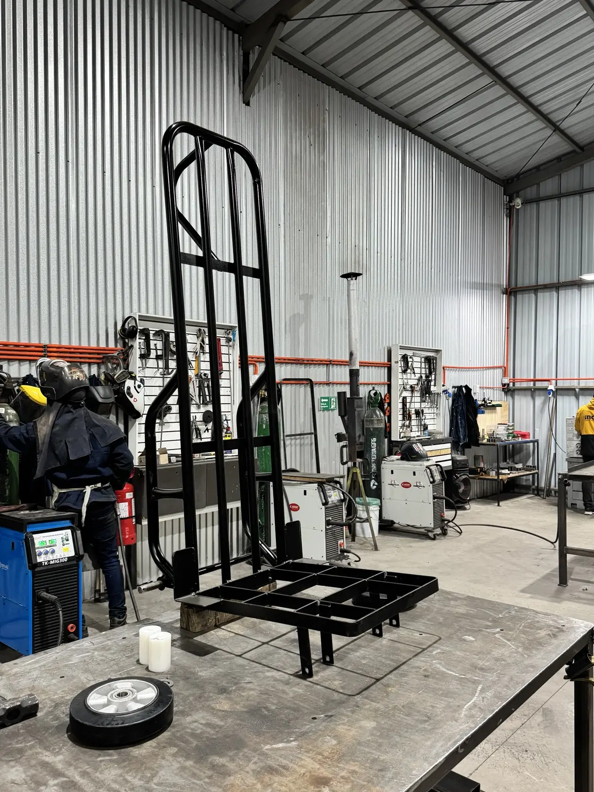
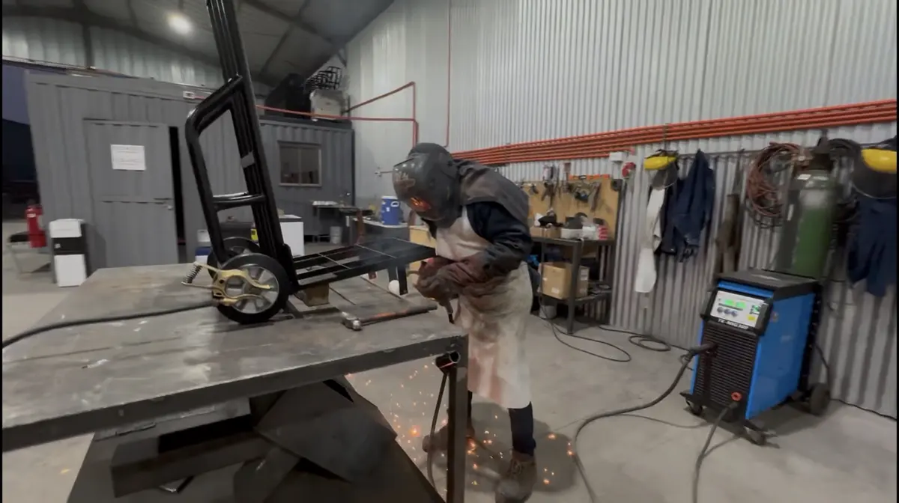
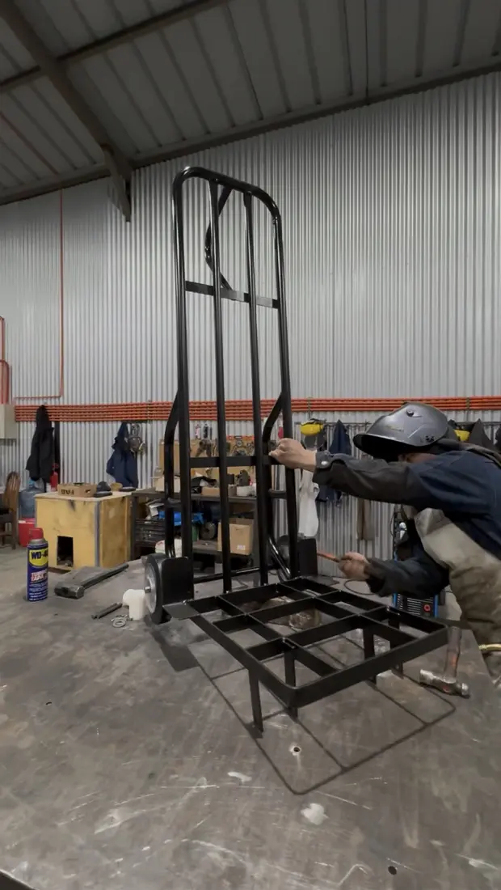
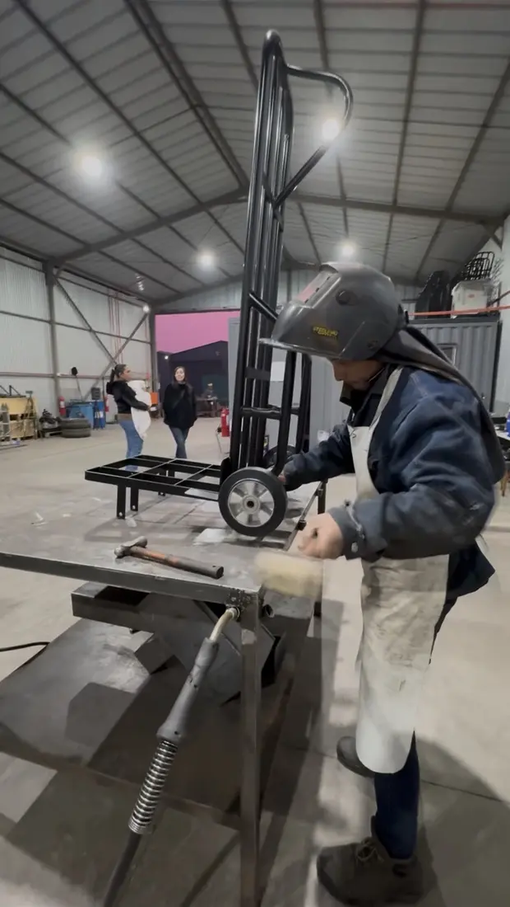

Soldadura y fabricación
Fabricación de yegua industrial
Fabricación completa de un carro manual de carga —conocido en Chile como yegua— integrando corte de perfiles y placas, mecanizado de componentes, armado, soldadura, montaje de ruedas y terminaciones.






Caso documentado
Necesidad, equipos y resultado
- Necesidad
- Crear un carro manual resistente para carga y traslado.
- Equipos
- Corte, torno, soldadura y herramientas de terminación.
- Resultado
- Yegua industrial armada, pintada y lista para trabajo.
Proceso ejecutado
- Definición de dimensiones, capacidad y geometría de la estructura
- Corte de perfiles y placas para la base y el respaldo
- Mecanizado de ejes, pasadores y elementos de unión necesarios
- Armado, punteo y soldadura de la estructura metálica
- Montaje de ruedas, verificación y terminación superficial